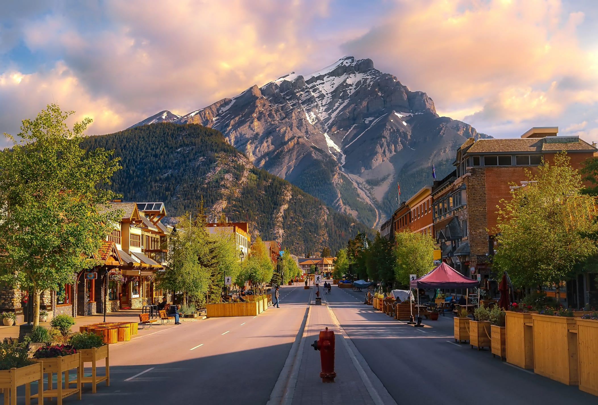
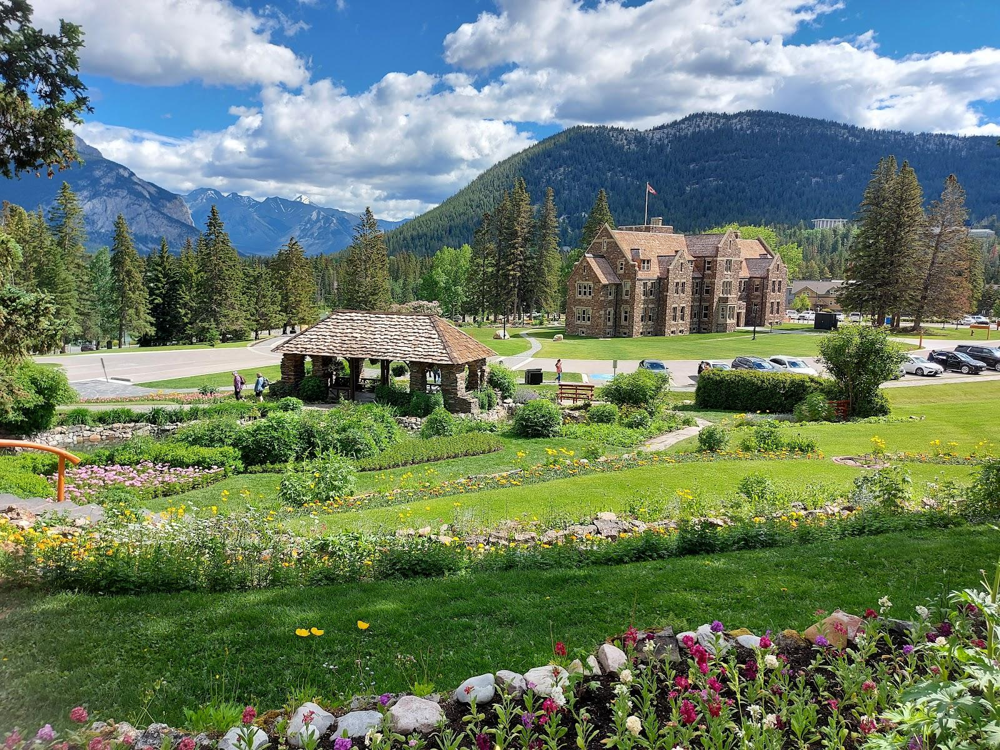
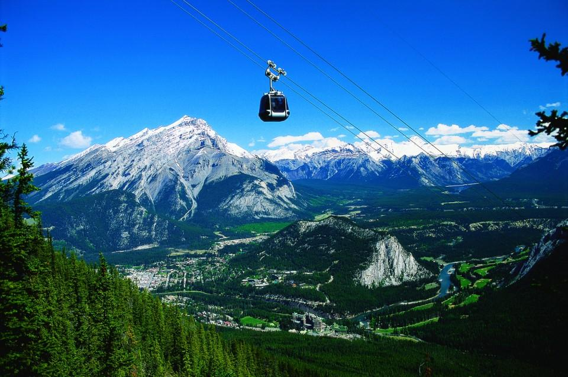
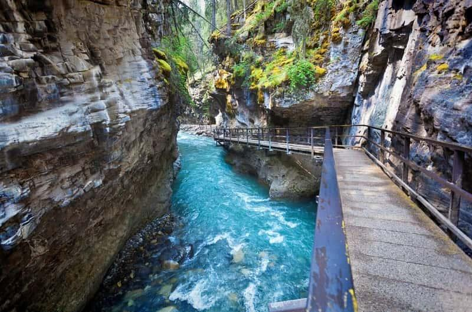
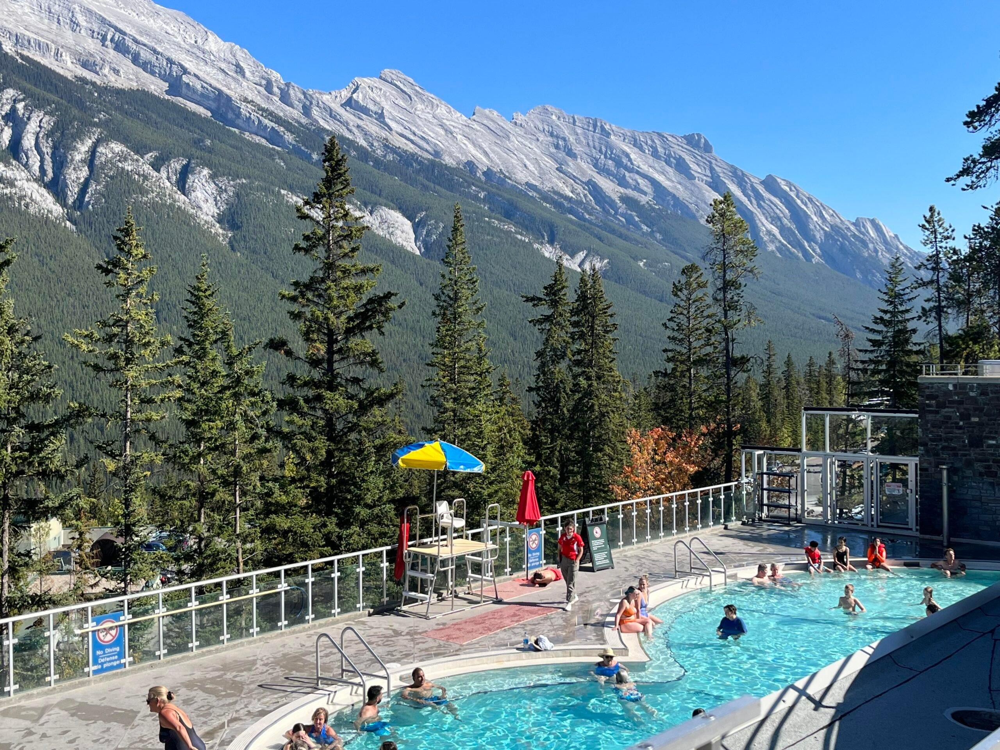

📅 Day 2 요약
🚗 총 이동거리
약 110km
🕒 총 운전시간
약 1시간
🥾 총 도보
약 4km (여유로운 산책 포함)
⭐ 오늘의 하이라이트
✔ Banff Avenue 산책
✔ Cascade of Time Garden
✔ Banff Gondola (15:00 예약)
✔ Johnston Canyon
✔ Banff Upper Hot Springs
🌤 예상 복장
긴팔 + 얇은 바람막이
운동화 필수
저녁에는 겉옷 준비
🎒 오늘 준비물
카메라 또는 휴대폰 보조배터리
생수
선글라스
온천용 수영복 · 슬리퍼
🍁 Day 2 - 밴프 타운 & 존스턴 캐니언

☀️ 오전 일정
🕘 출발
09:00 Canmore 숙소 출발
🚗 이동
밴프 타운까지 약 30분
📍 목적지
Banff Avenue
🚶 일정
메인스트리트 산책
기념품 쇼핑
카페 이용

🌸 Cascade of Time Garden
🕙 예상 시간
10:30 ~ 11:10
📍 위치
Cascade of Time Garden
📸 추천
밴프에서 가장 아름다운 정원
가족 사진 촬영 추천

🚠 밴프 곤돌라
🕒 예약 시간
15:00 탑승
📍 위치
Banff Gondola
⏱ 소요 시간
약 2시간
📸 추천 포인트
설퍼산 정상 전망대
보드워크 산책
파노라마 전망 감상
🍽 점심 식사
🍔 추천 식당
Eddie Burger Bar
또는
Park Distillery
💰 예상 비용
1인 약 CAD 25~35
☕ 추천
식사 후 스타벅스 또는
Evelyn's Coffee 방문

🥾 존스턴 캐니언
🕕 예약 시간
18:00 도착
🚶 코스
Lower Falls 왕복
약 2.5km / 1시간
👟 난이도
쉬움 (가족 모두 가능)
📸 추천 포인트
협곡 전망
Lower Falls 전망대

♨️ 밴프 어퍼 핫스프링스
🕗 예상 시간
19:30~20:30
♨️ 일정
온천에서 피로 풀기
여행 첫날의 피로 회복
🩳 준비물
수영복
슬리퍼
수건
🍽 저녁 식사
🍖 추천 식당
The Grizzly Paw
또는
Tank310
⭐ 추천 메뉴
알버타 스테이크
수제버거
현지 맥주
🌙 하루 마무리
숙소 복귀
다음날(모레인 레이크) 준비